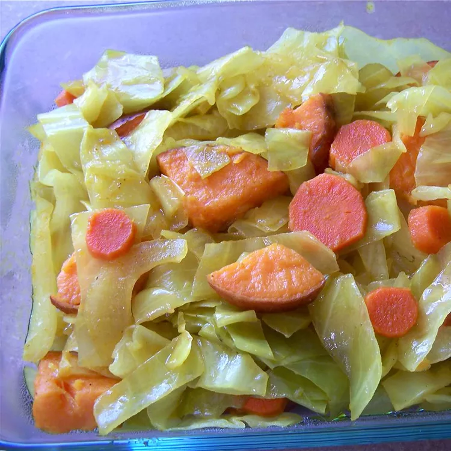

Cabbage Dish

To make this flavorful dish, you'll simply cook onions, carrots, cabbage, and potatoes in olive oil seasoned with cumin and turmeric. If you like, add a little ginger and garlic. "My Ethiopian friend brought this dish to a potluck and I've been making it ever since," says stamarex. "It is healthy and delicious. Do not add liquid. The cabbage and potatoes release enough moisture on their own."
Ingredients
- Cabbage
- Carrots
- Onions
- Ginger
- Garlic
- Turmeric
- Curry powder
- Vegetable oil
- Salt
- Black pepper
Steps To prepare This Dish
- Heat vegetable oil in a large pan or skillet over medium heat.
- Add chopped onions, minced ginger, and minced garlic to the pan.
- Sauté until the onions become translucent and the mixture becomes fragrant.
- Add shredded cabbage and sliced carrots to the pan.
- Sauté for a few minutes until the cabbage starts to wilt.
- Sprinkle turmeric, curry powder, salt, and black pepper over the cabbage mixture.
- Stir well to evenly coat the cabbage and vegetables with the spices.
- Cover the pan and cook for about 10-15 minutes, stirring occasionally, until the cabbage and carrots are tender.
- Adjust the seasoning if needed.
- Remove from heat and serve hot as a side dish or with injera or rice.